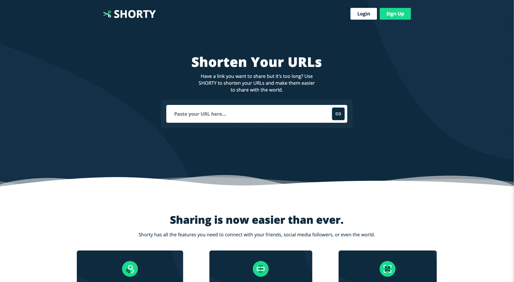

Shorty (Link Shortener)
Link shortener built with the MERN stack with a team of developers. The user can create shortened links and save them to their profile, edit the original link, display them in a link tree, and finally delete them from their account. The links are stored in a global db so that a user can create a link and use it without ever needing to register. I played a larger part in writing the algorithm to create the shortened link and implementing it.
Repo LinkLive Link
Technologies Used:
- React
- JavaScript
- HTML
- CSS
- Node.js
- MongoDB
